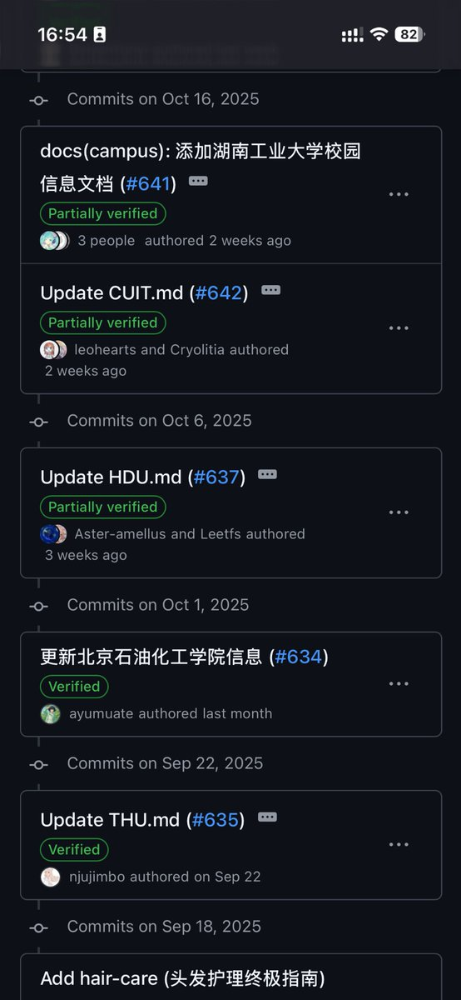
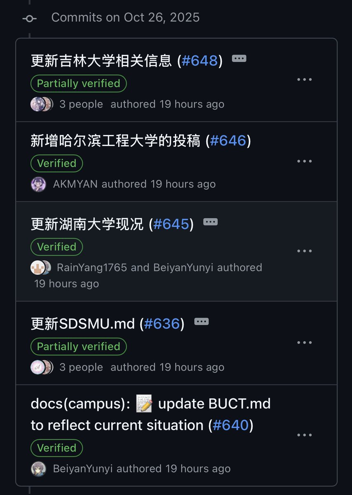

時璃風医詩🍥🌈
@hagishigure
@Beiyan_Yunyi 。要不是是github項目我早就扔syn洪水給你們打點流量玩玩了。天天在那吵來吵去。


北雁云依 - 21018365486@o3o.ca
@Beiyan_Yunyi
RLE wiki 昨天一天的更新，抵得上 之前快一个月（9 月 22 日到 10 月 16 日）。 10 月 16 日那俩还是我们老团队干的，中间还有个国庆假期。
“不是因为突然良心发现，而是因为我们来过”。
我发推上的东西都是过去半年在群里反复发的，我完全“明牌”，首负完全知道我有哪些论点，结果就回应成这个样子 https://t.co/vKYlsEzk0Q https://t.co/mYBz2xvb5d